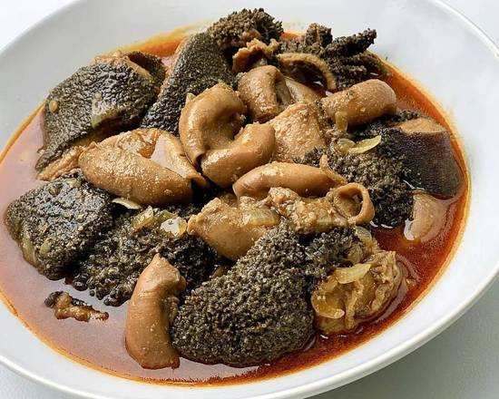

Usu

Home made mugodu with a godly twist
This recipe is a special one that represents the original tradition of this Nguni meal. With simple and easy to find ingredients, the secrete is in the timing and the proportions which are critical when making this magnificent dish.
ingredients
- Onions
- Garlic
- Mugodu meat
- Two potatoes
- Oil
- pepper
Steps
- Wash the meat properly, ungayirobhi ngoba uzozisola
- Put the meat on the pot and add water
- Boil the meat until soft, about 4 hours with full heat
- Keep adding water until ripe
- Once ripe, prepare your onions, pepper and garlic
- In another pot, put oil